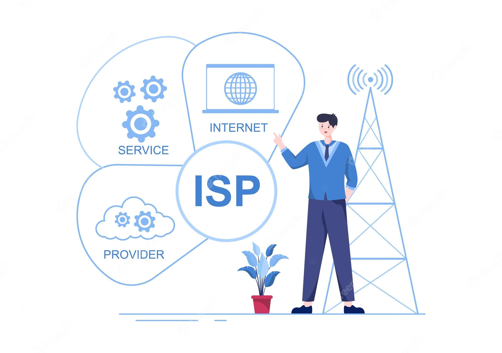
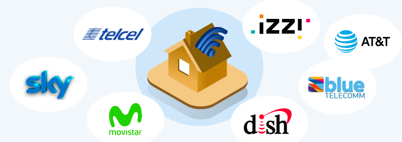

El internet
1.Internet es una red de computadoras que se encuentran interconectadas a nivel mundial para compartir información. Se trata de una red de equipos de cálculo que se relacionan entre sí a través de la utilización de un lenguaje universal.

Proveedores de servicios de internet
2.(ISP) es una empresa u organización que les proporciona a las personas, las empresas u otras organizaciones el acceso a Internet, por medio de una variedad de tecnologías como banda ancha, DSL, cable, fibra óptica, satélite y conexiones inalámbricas.Debido a su importante función, los ISP están regulados por los gobiernos y deben cumplir con varias regulaciones y leyes relacionadas con la privacidad de los datos, la neutralidad de la red y otras cuestiones relacionadas con la prestación de servicios de Internet.
Tipos de proveedores de internet
3.Dish,Cablemás,Blue Telecomm,VeTV,Telcel,Cablevision,Telmex y Izzi.
Experiencia de usuario
4.También llamada user experience o simplemente UX, se define como el conjunto de factores y elementos relacionados con el proceso de interacción de un usuario respecto a un producto o servicio. A menudo, este concepto se aplica a la interacción con páginas web y aplicaciones. Como puedes imaginar, dentro del paraguas de la user experience entran muchos elementos diferentes, ya que hay muchísimos factores que influyen en la manera en que percibimos los productos y servicios y nos relacionamos con ellos.
Interfaz de usuario
5.Es un medio visual que combina una serie de controles y elementos que permiten a un usuario comunicarse e interactuar con un dispositivo electrónico. Así como con un software o sitio web, debes entender qué es una interfaz de usuario. Una buena interfaz de usuario debe ser sencilla de utilizar, fácil de comprender y de aprender.
Protocolo de internet
6.El Protocolo de Internet (IP) es un protocolo, o conjunto de reglas, para enrutar y direccionar paquetes de datos para que puedan viajar a través de las redes y llegar al destino correcto. Los datos que atraviesan Internet se dividen en trozos más pequeños, llamados paquetes. La información IP se adjunta a cada paquete y esta información ayuda a los enrutadores a enviar los paquetes al lugar correcto. A cada dispositivo o dominio que se conecta a Internet se le asigna una dirección IP y a medida que los paquetes se dirigen a la dirección IP adjunta, los datos llegan a donde se necesitan. Una vez que los paquetes llegan a su destino, se manejan de forma diferente en función del protocolo de transporte que se utilice en combinación con IP. Los protocolos de transporte más comunes son TCP y UDP.
HTML
7.Es el lenguaje con el que se define el contenido de las páginas web. Básicamente se trata de un conjunto de etiquetas que sirven para definir el texto y otros elementos que compondrán una página web, como imágenes, listas, vídeos, etc. El HTML se creó en un principio con objetivos divulgativos de información con texto y algunas imágenes. No se pensó que llegara a ser utilizado para crear área de ocio y consulta con carácter multimedia (lo que es actualmente la web), de modo que, el HTML se creó sin dar respuesta a todos los posibles usos que se le iba a dar y a todos los colectivos de gente que lo utilizarían en un futuro. Sin embargo, pese a esta deficiente planificación, si que se han ido incorporando modificaciones con el tiempo, estos son los estándares del HTML.

Semántica html
8.Desde su inicio el HTML añade significado semántico a el código que comprende un sitio web.Con etiquetas como h1,p,img, etc… el desarrollador puede designar un título, añadir encabezados y párrafos e insertar imágenes para así dar forma al documento.En el HTML cada elemento tiene su propio modelo de contenido, el cual describe el tipo de contenido que este debe contener y parámetros adicionales como el texto alternativo o alt text para describir los contenidos de una imagen a los rastreadores.